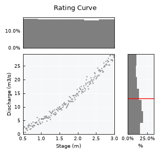
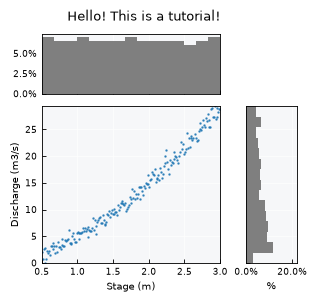
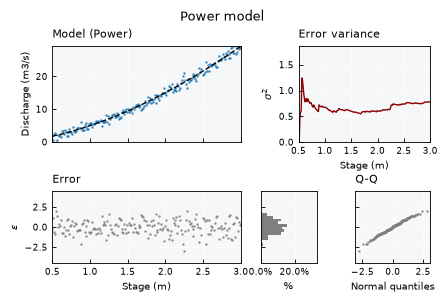

Bivariate data - the basics#
This tutorial focuses on working with paired (bivariate) data using plans: loading x/y samples, inspecting their joint distribution, fitting simple regression models and assessing the model errors.
Notebook setup#
For users running this tutorial as a Jupyter Notebook, this cell must be executed first:
import sys
from pathlib import Path
import numpy as np
import pandas as pd
# Install `plans` in `google.colab`.
# Use `pip install plans` for other environments.
if "google.colab" in sys.modules:
import os
os.system(f"{sys.executable} -m pip install -q plans")
# This avoids warnings related to uninstalled fonts
import logging
# Set the matplotlib font manager logger to only show errors (hides warnings)
logging.getLogger('matplotlib.font_manager').setLevel(logging.ERROR)
# define output folder
OUTPUT_DIR = Path("outputs/bivariate")
OUTPUT_DIR.mkdir(parents=True, exist_ok=True)
print(f"Outputs will be saved to: ./{OUTPUT_DIR}")
Outputs will be saved to: ./outputs/bivariate
The Bivar object#
The Bivar object lives under the plans.analyst module. Like Univar, it is a child of the DataSet object from plans.root, so it shares the same lifecycle: create the object, feed it data, and let .update() refresh the derived attributes.
See also
Check out the Univariate data - the basics tutorial first.
Import Bivar object:
from plans.analyst import Bivar
Create an instance of the Bivar:
bv = Bivar(name="Rating Curve", alias="RC")
Check out the variable type:
print(type(bv))
<class 'plans.analyst.Bivar'>
Handle data attributes#
Columns are named by .xfield and .yfield, while .xname, .yname, .xunits and .yunits are only used as labels in visuals and metadata. Set labels before loading data, so the axis labels are built from them:
bv.description = "Stage-discharge pairs for a tutorial"
bv.xname = "Stage"
bv.xunits = "m"
bv.yname = "Discharge"
bv.yunits = "m3/s"
print(f"x column: {bv.xfield} | y column: {bv.yfield}")
x column: x | y column: y
Working with data#
Create synthetic power-law dataset#
Stage-discharge relations (rating curves) are a classic bivariate case in hydrology. Lets make a synthetic one following a power law plus gaussian noise, shuffle the rows and add a couple of missing values, then save it to a CSV file.
# make synthetic power-law data
rng = np.random.default_rng(seed=42) # ensure reproducibility
h = np.linspace(start=0.5, stop=3.0, num=200)
q = 5 * np.power(h, 1.6) + rng.normal(loc=0, scale=1, size=len(h))
df = pd.DataFrame({"stage": h, "discharge": q})
# shuffle rows and add missing values
df = df.sample(frac=1, random_state=42).reset_index(drop=True)
df.loc[[3, 7], "discharge"] = np.nan
# Export CSV file
file_csv = OUTPUT_DIR / "bivariate_rating.csv"
df.to_csv(file_csv, sep=";", index=False)
print(f"Saved to: {file_csv}")
df.head()
Saved to: outputs/bivariate/bivariate_rating.csv
| stage | discharge | |
|---|---|---|
| 0 | 1.693467 | 10.167719 |
| 1 | 0.688442 | 1.892135 |
| 2 | 0.876884 | 6.193725 |
| 3 | 2.484925 | NaN |
| 4 | 2.108040 | 15.848562 |
Loading data from the CSV file#
Call the .load_data() method, pointing which file columns hold x and y. They are renamed to .xfield and .yfield on loading:
bv.load_data(
file_data=file_csv, # file path
input_xfield="stage", # name of x column
input_yfield="discharge", # name of y column
in_sep=";", # input separator
)
Data is stored in the .data attribute as a pandas.DataFrame. Incomplete pairs are dropped and rows are sorted by x:
bv.data
| x | y | |
|---|---|---|
| 0 | 0.500000 | 1.954102 |
| 1 | 0.512563 | 0.676206 |
| 2 | 0.525126 | 2.534436 |
| 3 | 0.537688 | 2.793325 |
| 4 | 0.550251 | -0.028529 |
| ... | ... | ... |
| 193 | 2.949749 | 27.329759 |
| 194 | 2.962312 | 29.060389 |
| 195 | 2.974874 | 28.215524 |
| 196 | 2.987437 | 28.798563 |
| 197 | 3.000000 | 28.834288 |
198 rows × 2 columns
Tip
For in-memory arrays, use .set_data(x=..., y=...) instead. It applies the same cleaning and sorting.
Access computed attributes#
After loading data, some attributes are computed automatically:
print(f"Size: {bv.size}")
print(f"x range: {bv.x_min:.2f} to {bv.x_max:.2f}")
print(f"y range: {bv.y_min:.2f} to {bv.y_max:.2f}")
print(f"Pearson R: {bv.corr:.3f}")
Size: 198
x range: 0.50 to 3.00
y range: -0.03 to 29.30
Pearson R: 0.986
Inspect the object metadata:
bv.get_metadata()
{'name': 'Rating Curve',
'alias': 'RC',
'size': 198,
'color': 'blue',
'source': None,
'description': 'Stage-discharge pairs for a tutorial',
'xunits': 'm',
'yunits': 'm3/s',
'file_data': '/home/runner/work/plans/plans/docs/tutorials/outputs/bivariate/bivariate_rating.csv'}
Visualizations#
Standard visualization#
Get the standard visual using the .view() method. The full layout shows the scatter plot with the marginal histograms of x (top) and y (right):
bv.view()

Fine-tuning visuals#
Like other plans objects, use the .view_specs keys for fine tuning:
bv.view_specs["color"] = "tab:blue"
bv.view_specs["bins"] = 15 # default None uses the Freedman-Diaconis rule
bv.view_specs["plot_mean"] = False
bv.view_specs["title"] = "Hello! This is a tutorial!"
bv.view()

Fitting models#
Available models#
Models are stored in the .models dictionary. Each entry holds the function, its formula, a Setup table of parameters and, once computed, the model Data and the RMSE:
for model_type, model in bv.models.items():
print(f"{model_type:<12} {model['Formula']}")
Linear f(x) = c0 + c1 * x
Power f(x) = c2 * ((x + c0)^c1)
Power_zero f(x) = c1 * (x^c0)
Fit a model#
The .fit() method runs a least squares fit and stores the mean and standard deviation of parameters in the Setup table:
bv.fit(model_type="Power")
bv.models["Power"]["Setup"]
| Parameters | Mean | SD | |
|---|---|---|---|
| 0 | c0 | 0.094287 | 0.091403 |
| 1 | c1 | 1.700409 | 0.082639 |
| 2 | c2 | 4.279182 | 0.593650 |
The model Data holds the predictions (y_Mean) and the errors (e_Mean, model minus observed):
bv.models["Power"]["Data"].head()
| x | y | y_Mean | e_Mean | |
|---|---|---|---|---|
| 0 | 0.500000 | 1.954102 | 1.766291 | -0.187811 |
| 1 | 0.512563 | 0.676206 | 1.830250 | 1.154044 |
| 2 | 0.525126 | 2.534436 | 1.895143 | -0.639293 |
| 3 | 0.537688 | 2.793325 | 1.960965 | -0.832359 |
| 4 | 0.550251 | -0.028529 | 2.027710 | 2.056239 |
Compare models#
Fit all models and compare their RMSE:
for model_type in bv.models:
bv.fit(model_type=model_type)
print(f"{model_type:<12} RMSE = {bv.models[model_type]['RMSE']:.3f}")
Linear RMSE = 1.337
Power RMSE = 0.878
Power_zero RMSE = 0.881
Set parameters manually#
Parameters can also be set by hand with .update_model(), for instance to test a known reference curve:
bv.update_model(params_mean=[1.5, 5.0], model_type="Power_zero")
print(f"RMSE = {bv.models['Power_zero']['RMSE']:.3f}")
RMSE = 1.589
Model assessment#
Model panel#
Set the model layout and the model_type key to get the model panel. It shows the fitted curve, how the error variance evolves along x, the errors, their histogram and a Q-Q plot against the normal distribution:
bv.fit(model_type="Power")
bv.view_specs["layout"] = "model"
bv.view_specs["model_type"] = "Power"
bv.view_specs["title"] = "Power model"
bv.view()

Error normality#
Assess if model errors are normal via the .get_error_normality() method:
df = bv.get_error_normality(model_type="Power", clevel=0.95)
df
| Test | Statistic | p-value | is_normal | Confidence | |
|---|---|---|---|---|---|
| 0 | Kolmogorov-Smirnov | 0.041331 | 0.873566 | True | 0.95 |
| 1 | Shapiro-Wilk | 0.992896 | 0.454820 | True | 0.95 |
| 2 | D'Agostino-Pearson | 2.084696 | 0.352626 | True | 0.95 |
Goodness-of-fit metrics#
Static methods are available for common metrics between predicted and observed values:
df_model = bv.models["Power"]["Data"]
pred = df_model[f"{bv.yfield}_Mean"].values
obs = df_model[bv.yfield].values
print(f"RMSE: {Bivar.rmse(pred=pred, obs=obs):.3f}")
print(f"MAE: {Bivar.mae(pred=pred, obs=obs):.3f}")
print(f"R2: {Bivar.rsq(pred=pred, obs=obs):.3f}")
print(f"Bias (%): {Bivar.bias(pred=pred, obs=obs):.3f}")
RMSE: 0.878
MAE: 0.709
R2: 0.988
Bias (%): 0.008